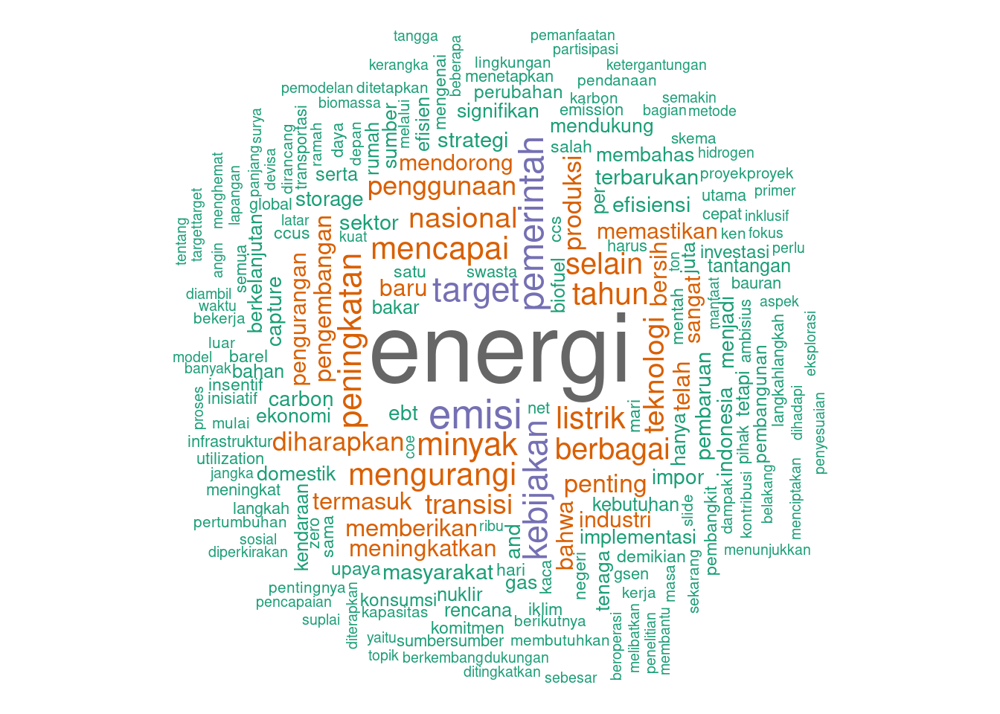

Insights from a Public Lecture: Word Cloud Analysis

For this task, our objective is to visualize the key points and themes from a public lecture delivered by the Secretary General of the National Energy Council. This lecture, held on May 29, 2024, at FISIP UPNVJ, covers critical topics related to energy policy and strategy. To achieve this, we first attended and recorded the lecture. Here is the recording file: Kuliah umum.mp3.
Next, we transcribed the recording into a text file, which can be accessed here: transkrip.txt. Using this transcript, we created a word cloud visualization to highlight the most frequently discussed words and phrases from the lecture. This visualization provides a quick and impactful way to understand the main topics and issues emphasized by the speaker, offering valuable insights into the current discourse on national energy policies.
Load required libraries
# Load the required libraries
library(tm)
library(wordcloud)
library(RColorBrewer)Data Preprocessing
# Read the text file
text <- readLines("resources/transkrip.txt", encoding = "UTF-8")
# Create a corpus
corpus <- Corpus(VectorSource(text))Data Cleaning
# Define a list of Indonesian stopwords
stopwords_id <- c("yang", "dan", "di", "ke", "dari", "ini", "itu", "dengan", "untuk", "pada", "adalah", "sebagai", "dalam", "tidak", "akan", "atau", "juga", "oleh", "sudah", "kami", "karena", "pada", "tersebut", "dapat", "antara", "saya", "ia", "namun", "lebih", "seperti", "bagi", "oleh", "mereka", "setelah", "jika", "saat", "hingga", "kami", "kita", "terus", "speaker", "1", "0")
# Text cleansing
corpus <- tm_map(corpus, content_transformer(tolower)) # Convert to lowercase
corpus <- tm_map(corpus, removePunctuation) # Remove punctuation
corpus <- tm_map(corpus, removeNumbers) # Remove numbers
corpus <- tm_map(corpus, removeWords, stopwords_id) # Remove Indonesian stopwords
corpus <- tm_map(corpus, stripWhitespace) # Strip whitespaceWordcloud Visualization
# Create a term-document matrix
tdm <- TermDocumentMatrix(corpus)
# Convert the term-document matrix into a matrix
m <- as.matrix(tdm)
# Get word frequencies
word_freqs <- sort(rowSums(m), decreasing = TRUE)
# Create a data frame with words and their frequencies
word_freqs_df <- data.frame(word = names(word_freqs), freq = word_freqs)
# Generate the word cloud
set.seed(1234) # for reproducibility
wordcloud(words = word_freqs_df$word, freq = word_freqs_df$freq,
min.freq = 2, max.words = 200,
random.order = FALSE, rot.per = 0.35,
colors = brewer.pal(8, "Dark2"))
Commentary
Key Terms
- Energi (Energy): The most prominent term, indicating the primary focus of the lecture.
- Target (Goals), Kebijakan (Policy), Emisi (Emissions), Pemerintah (Government): These terms suggest important topics discussed in the lecture, such as setting and achieving targets, government policies, and emission reductions.
- Penggunaan (Usage), Minyak (Oil), Mencapai (Achieving), Tahun (Year), Peningkatan (Increase), Berbagai (Various), Selain (Besides), Listrik (Electricity): Indicate discussions around the usage of energy, the role of oil and electricity, timelines, various aspects of energy policies, and efforts to achieve goals.
- Teknologi (Technology), Bersih (Clean), Transisi (Transition), Industri (Industry), Implementasi (Implementation), Masyarakat (Community/Society), Produksi (Production), Rencana (Plan): Indicate discussions around technological advancements, clean energy, transitioning to renewable sources, the industrial aspect, implementation strategies, community involvement, production methods, and planning.
Themes
- Government and Policy: The presence of pemerintah and kebijakan indicates the role of governmental policies in shaping the energy landscape.
- Renewable Energy Transition: The frequent mention of mengurangi and meningkatkan implies discussions on transitioning from fossil fuels to renewable energy sources.
- Technological Innovations: Terms like teknologi and produksi suggest a focus on technological solutions and innovations in energy production.
- Emission Reductions: Emphasis on emisi and related terms indicates a significant focus on reducing emissions and environmental impact.
Implications
- Focus on Sustainability: The word cloud highlights the emphasis on sustainability, reducing emissions, and increasing the use of renewable energy.
- Policy and Governance: It underscores the importance of government intervention and policy-making in achieving renewable energy goals.
- Technological Advancements: The discussion likely includes innovations and advancements in technology to support energy production and efficiency.
- Public Awareness and Education: The varied terms indicate a comprehensive discussion aimed at educating the public on various aspects of renewable energy, from technical details to policy measures.